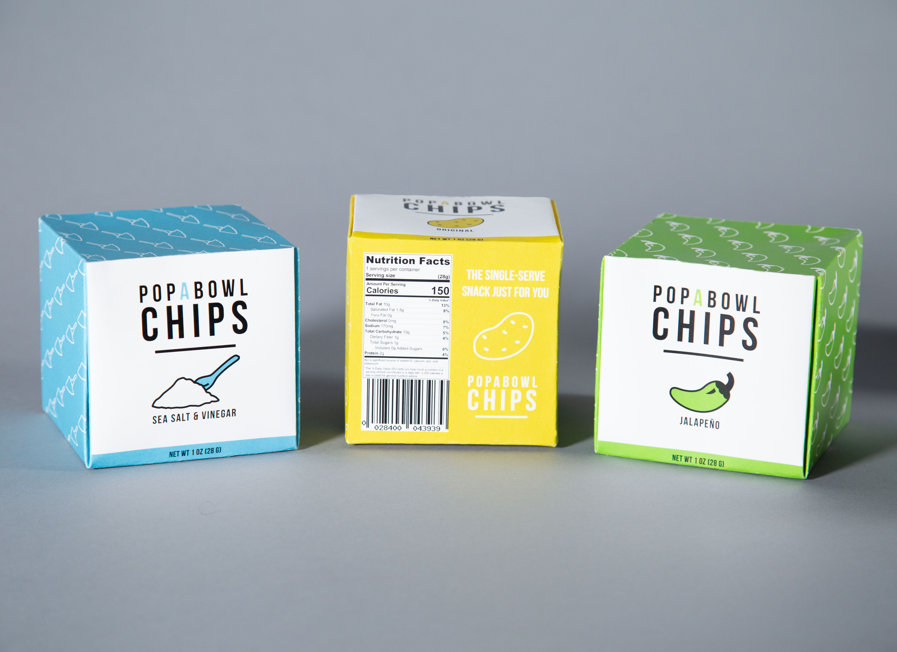
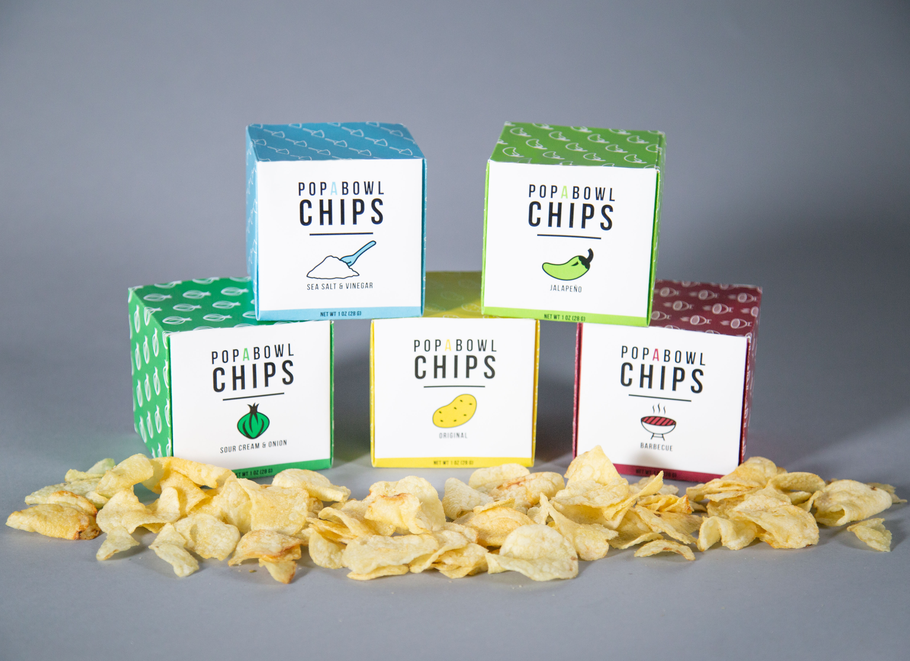
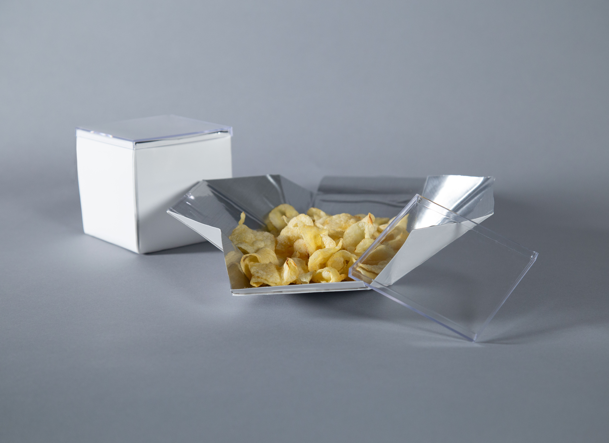
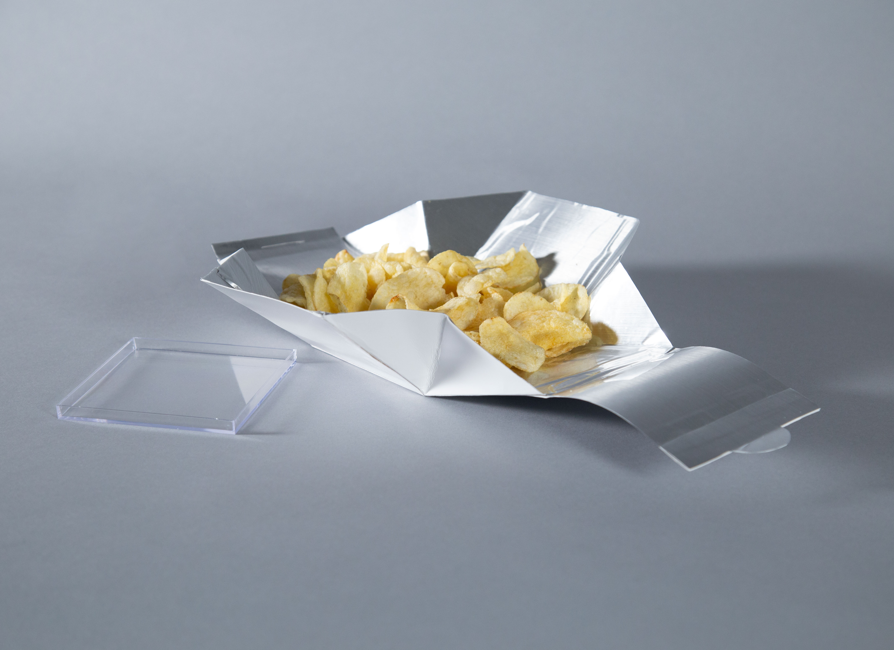

POPABOWL
Potato Chip Packaging Design
PopABowl Potato Chips are a new approach to how potato chips are packaged. Their design is inspired by many of the common problems consumers find with standard potato chip bags.

PopABowl Chips are a single-serve solution to the worst parts of the original potato chip bag:
- Noise Level: The top consumer complaint when it comes to potato chips is a noisy bag. PopABowl's paperboard box quietly opens.
- Mess: While current chip bags require digging that results in greasy fingers, PopABowl pops from a box into a bowl to allow for easy eating.
- Sustainability: PopABowl's paperboard material is more sustainable, while the inside is still lined with layers of polymers necessary to keep the chips fresh.


